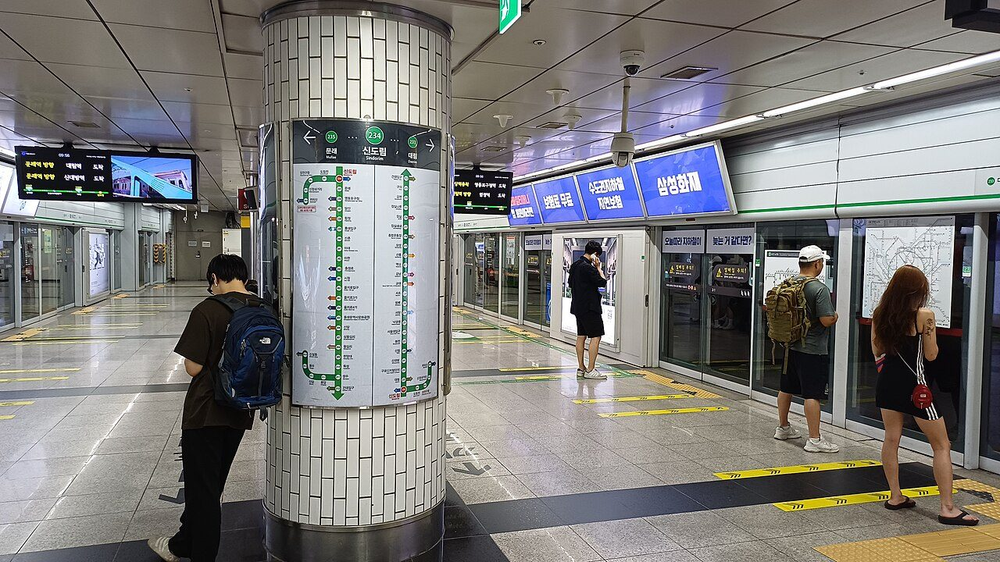
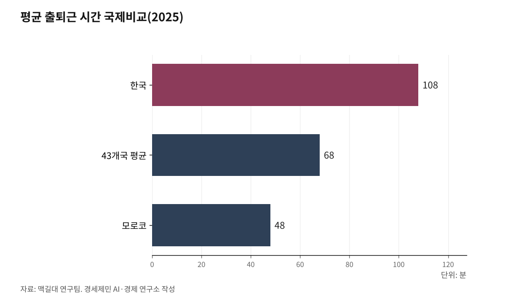

[한국경제 불편한 진실⑰] 교통 — 세계에서 가장 긴 출퇴근, 값은 시간으로 낸다
한국인 평균 출퇴근 1시간48분, 43개국 가운데 가장 길다
서울 지하철은 승객 한 명을 태울 때마다 781원을 잃는다
요금을 눌러 놓은 값은 세금과 시간으로 갈라져 청구된다
AI경세제민=김갑봉 기자 | 서울 지하철 1~8호선이 승객 한 명에게서 실제로 받은 돈은 지난해 평균 1036원이다. 그 한 명을 태우는 데 든 원가는 1817원이다. 지하철은 한 명 태울 때마다 781원씩 손해를 보며 달렸다. 서울교통공사가 2026년 6월 공개한 지난해 경영 실적이다.

요금이 싸다고 값이 없어지지는 않는다. 눌러 놓은 만큼은 누군가 다른 형태로 낸다. 교통의 불편한 진실은 그 청구서가 어디로 갔느냐에 있다.
세계에서 가장 긴 출퇴근
스페인 바르셀로나 자치대와 캐나다 맥길대 연구팀이 43개국을 견줘 보니 한국인의 평균 출퇴근 시간이 1시간48분으로 가장 길었다. 43개국 평균은 1시간8분, 가장 짧은 모로코는 48분이었다. 2025년 11월 나온 결과다.
나라 안에서도 갈린다. 한국노동연구원이 2024년 8월 내놓은 '출·퇴근 시간 실태와 결정요인 분석'을 보면 2019년 수도권 거주자의 평균 출퇴근 시간은 90.4분으로, 비수도권 63.1분보다 27.3분 길었다.
경기연구원이 2026년 4월 발표한 '2025 경기 라이프 서베이'에서는 경기도에서 서울로 출퇴근하는 사람의 편도 시간이 평균 61.9분이었다. 도 안에서 움직일 때 걸리는 34분의 두 배에 가깝다. 도민이 이상적이라고 답한 통근 시간은 하루 1시간인데, 실제로는 1시간12분을 길에 썼다.
그 시간을 견디는 사람이 적지 않다. 경기연구원이 2025년 낸 '경기도 대도시권 출퇴근 광역통행 1시간 실현방안 연구'를 보면 경기도민 23.8%는 통근에 1시간 이상이 걸렸다. 경기도의 통근 통행량은 인구가 몰리면서 해마다 평균 3.6%씩 늘고 있다.

집값이 만든 통근
왜 멀어졌나. 서울연구원은 2010년 이후 수도권 집값이 오르면서 직장 위치와 상관없이 서울 외곽이나 경기도에 집을 구하는 사람이 늘었고, 그것이 장거리 통근을 불렀다고 짚었다.
숫자가 그대로 따라온다. 2023년 서울서베이에서 편도 통근·통학이 1시간을 넘는다고 답한 서울시민은 13.5%였다. 이들이 주로 사는 곳은 양천·강동·강북·도봉처럼 교통이 불편한 서울 외곽이다.
그러니까 통근 시간은 주거비의 그림자 값이다. 집값을 돈으로 못 낸 사람이 시간으로 낸다. 그 시간은 임금명세서에도, 관리비 고지서에도 찍히지 않는다. 값을 치르고도 냈다는 기록이 없다.
기록이 없어도 흔적은 남는다. 강북삼성병원 연구팀이 2025년 9월 내놓은 분석을 보면, 2023년 서울서베이에 답한 서울 직장인 2만4000여명 가운데 편도 출퇴근이 60분을 넘는 사람은 30분 이하인 사람보다 가족 관계에서 외로움을 느낄 위험이 49% 높았다.
값을 시간으로 걷는 도로
윌리엄 비커리(William Vickrey)는 1963년 논문 「도시와 교외 교통의 가격 결정」에서 도로 혼잡을 값의 문제로 봤다. 도로 공간을 가격으로 나누지 않으면 줄서기로 나눠 갖게 되고, 그 값은 통행료가 아니라 지체 시간으로 청구된다는 것이다. 혼잡통행료라는 개념이 여기서 나왔고, 그는 1996년 노벨경제학상을 받았다.
한국은 그 청구서를 실제로 받고 있다. 한국교통연구원 집계에서 2023년 도로부문 교통혼잡비용은 81조3000억원으로, 명목 국내총생산의 3.37%다. 시군도로까지 넣어 산정 범위가 같아진 2016년 55조9000억원(3.21%)에서 일곱 해 만에 25조원 넘게 불었다.
원가의 절반에 파는 대중교통
지하철은 원가를 못 채운다. 서울교통공사의 원가 보전율은 지난해 57%로, 2021년 50.2%·2023년 54.7%처럼 5년 내내 50%대에 머물렀다. 지난해 당기순손실은 8268억원이다.
손실의 거의 전부가 정책에서 나온다. 무임수송·환승할인 같은 공익서비스 손실이 8167억원으로 순손실과 맞먹는다. 이 가운데 무임수송이 4488억원인데, 2020년 2643억원에서 5년 새 70%가량 늘었다. 원가를 다 받으려면 기본운임을 1550원에서 2591원으로 올려야 한다는 게 공사의 계산이다.
버스도 다르지 않다. 서울시가 2004년 준공영제를 시작한 뒤 지난해까지 시내버스 적자를 메우는 데 쓴 돈은 7조1478억원이다. 연간 지원액은 1246억원에서 5127억원으로 네 배 넘게 늘었다. 그런데 인가된 시내버스는 2004년 8307대에서 2024년 7382대로 925대 줄었다. 돈은 더 넣었는데 차는 줄었다.
청구서는 셋으로 갈라진다
교통 요금은 시장이 정하지 않는다. 지방자치단체와 정치가 정한다. 올리면 지금 표를 잃고, 묶으면 적자가 세금으로 넘어간다. 부담은 임기 뒤로 밀리니 선거를 앞두고 요금을 손댈 이유가 없다.
그래서 교통의 값은 셋으로 갈라져 청구된다. 요금, 세금, 그리고 시간이다. 앞의 둘은 고지서가 있어 누가 얼마를 냈는지 보인다. 시간에는 고지서가 없다.
6·3 지방선거로 뽑힌 추미애 경기도지사는 '30분 출근 대전환'을 핵심 공약으로 내걸었다. 임삼진 녹색도시연구원 원장은 혼잡통행료를 걷어 대중교통 운영에 쓸 별도 재원을 만들자고 제안했다. 어느 쪽을 택하든 값은 사라지지 않고 자리만 옮긴다. 다만 지금 그 값을 누가 어떤 형태로 내고 있는지는, 아직 제대로 셈해 본 적이 없다.
※ 이 기사는 AI 프로그램 클로드 오푸스 5를 활용해 작성했다.
참고문헌
· "출발부터 '헉헉' 한국 직장인의 비명…통근 '왕복 2시간' 세계 1.5배", 아시아경제, 2025.11.18. https://www.asiae.co.kr/article/2025111810252137353
· "'출퇴근 2시간이면 200만원 손해?'…장거리 통근에 직장인 한숨", 아시아경제, 2025.08.12. https://www.asiae.co.kr/article/2025081211181097789
· "출퇴근 스트레스 높은 경기도민 '근로시간 줄이고 여가 즐기고파'", 기호일보, 2026.04.20. https://www.kihoilbo.co.kr/news/articleView.html?idxno=3020303
· "서울 지하철 '빚 안고 달리는 중'…요금 1550원→2591원 돼야 정상화", 아시아경제, 2026.06.12. https://www.asiae.co.kr/article/2026061208331966120
· "인건비 2배·재정 부담 급증…서울 버스 준공영제 '개편론' 확산", 서울경제, 2026.05.06. https://www.sedaily.com/article/20040493
· "경기도민 23.8% 통근 1시간…추미애 '30분 대전환' 밑그림 착수", 이데일리, 2026.06.24. https://www.edaily.co.kr/News/Read?mediaCodeNo=257&newsId=03739206645485000
· "국가 교통정책 평가지표 조사사업 — 3대비용 종합분석", 한국교통연구원, 2023년 기준. https://www.koti.re.kr/user/traffic/analyz.do
· William S. Vickrey, "Pricing in Urban and Suburban Transport", American Economic Review, 1963.
사진 출처
· [대표사진] Striker9498, "20250713 2호선 신도림역 승강장.jpg", 위키미디어 공용, CC0, https://commons.wikimedia.org/wiki/File:20250713_2%ED%98%B8%EC%84%A0_%EC%8B%A0%EB%8F%84%EB%A6%BC%EC%97%AD_%EC%8A%B9%EA%B0%95%EC%9E%A5.jpg
※ 이 브리핑은 인공지능을 활용해 작성했습니다.
관련기사
- [한국경제 불편한 진실⑱] 데이터 — 3756만건 유출, 10만원으로 매겨진 값
- [한국경제 불편한 진실⑯] 물·인프라 — 원가의 4분의 3에 파는 수돗물, 낡은 관은 미래로 미룬다
- [주식공부] 코스피 12.13% 하락, 자사주 끊긴 자리에 선 개인
- 노후계획도시 선도지구, 분담금은 용적률 두 구간에서 갈린다
저작권자 © AI경세제민 무단전재 및 재배포, AI학습 및 활용 금지